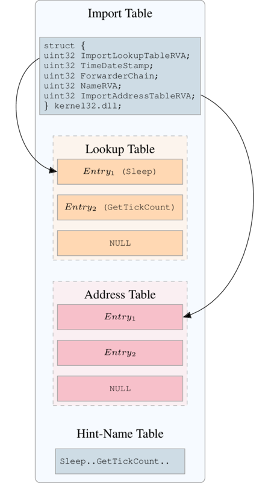
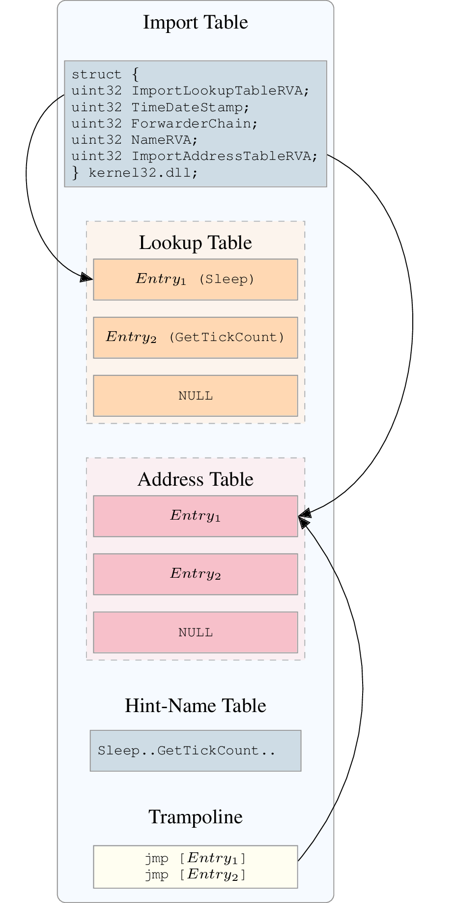

PE Format¶
In this part we won’t describe PE format totally but some parts that are tricky.
Rebuilding Import Table¶
When a PE binary uses external library, it usually has an import table stored in the .idata section. This table has the following structure:
{kind=link}

The lookup table holds offset to imported function’s name. In the example, we import functions Sleep and GetTickCount from the kernel32.dll.
The address table is identical (in most cases) to the lookup table but at runtime it will hold the imported function’s address. The first entry will hold the address of Sleep and the second one the address of GetTickCount.
If the program need to call Sleep function the assembly code should look like this:
call address_table[entry1] ; call to sleep
When rebuilding binary in LIEF we don’t patch at any moment the assembly code which is a strong constraint for rebuilding import table. As we don’t know exact structure of import table in the original binary (address table could be before lookup table…).
`
The reconstructed import table is built in another section named .idata. To keep a consistent binary we patch the original binary in the following way:
Each entry in the address table is replaced with the address of the entry in the trampoline section. (see figure 2)
{kind=link}

So if we have a call to an imported function we will have the following sequence of instructions:
call address_table_original[entry1] ; call to trampoline[0]
jmp *address_table[entry1] ; jump to Sleep address